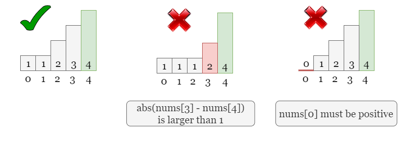
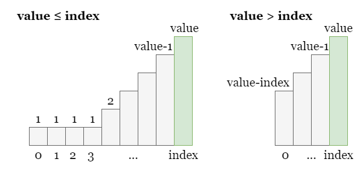
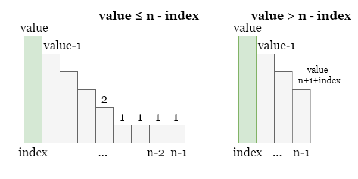

As usual, let's start with the example given in the problem statement. Referring to the figure below, there are
several ways to make nums[2] the maximum, as shown in the first two examples. However, once we want a
larger nums[2] as 3, the sum of the array will certainly be greater than
maxSum.
The objective is to maximize nums[index] while ensuring the sum the array does not exceed
maxSum, so we can try using a greedy algorithm. In order to maximize nums[index], we need
to ensure that all other values are as small as possible.
However, we cannot take the other values to be arbitrarily small. Referring to the two rules given in the problem:
- The difference between adjacent numbers cannot be greater than
1.nums[i]must be positive.
Therefore, the last two examples in the figure below are not valid. In the example in the middle, the difference
between adjacent numbers (nums[3] and nums[4]) is greater than 1. In the
example on the right, the first number is equal to 0, which is not allowed.
Hence, we need to ensure that nums[i] satisfies these conditions as well.

Therefore, the straightforward approach is after setting a value for nums[index], let the numbers to its
left decrease one by one from right to left until they reach 1. Similarly, the numbers to its right
decrease one by one from left to right until they reach 1. This way, we can ensure that the total sum
of the array is minimized without violating the rules.
Next, we need to calculate the sum of the array, which is a purely mathematical problem. Let's take the numbers to
the left of nums[index] as an example. There will be an arithmetic sequence to its left, and (possibly)
a consecutive sequence of 1s if nums[index] is less than the number of elements to the
left. We need to determine the length of the arithmetic sequence based on the relative sizes of index
and value.
Once we have determined the length of the arithmetic sequence, we can calculate the sum of the sequence using the arithmetic sequence formula:
sum=(A[1]+A[n])⋅n/2\text{sum} = (A[1] + A[n]) \cdot n / 2
where A[1] and A[n] are the first and last terms of the sequence respectively, and
n is the length of the sequence.
Take the following figure as an example:

If value <= index, it means in addition to the arithmetic sequence from value to
1, there will also be a continuous sequence of 1s with length index - value
+ 1. The sum of all elements on index's left (including nums[index]) is
made up by two parts:
[1, 2, 3, ..., value - 1, value], which is (value + 1)
* value / 2.
index - value + 1 consisting of all 1s, which is
index - value + 1.
Otherwise, it means there is only one arithmetic sequence on the left side of index, with the first item
being value and the last item being value - index, so the sum of all elements on
index's left (including nums[index]) is:
[value - index, ..., value - 1, value], which is (value
+ value - index) * (index + 1) / 2.
Similarly, the right side of nums[index] is exactly the same. We need to determine the length of the
arithmetic sequence and the length of the continuous subarray of 1 based on the relative sizes of
n - index and value.

If value is less than or equal to n - index, it means there is a subarray of length
n - index - value consisting of all 1s in addition to the arithmetic sequence from
value to 1. The sum of all elements on index's right (including
nums[index]) is made up by two parts:
[value, value - 1, ..., 2, 1], which is (value + 1) *
value / 2.
index - value + 1 consisting of all 1s, which is
n - index - valueOtherwise, there is only an arithmetic sequence on the right side of index with the first term being value
and the last term being value - n + 1 + index, so the sum of all elements on index's
right (including nums[index]) is:
[value, value - 1, ..., value - n + 1 + index], which is
(value + value - n + 1 + index) * (n - index) / 2.
Don't forget that we have added the actual value at index twice, so we need to subtract the
final sum by value.
Now that we know how to calculate the array sum given a specific nums[index] = value, the question is
how do we maximize value?
We can use binary search to find the maximum value that meets the criteria. First, we define a search
range [left, right] that ensures the maximum value falls within this range. Next, we
perform a binary search within this range. For each boundary value mid that divides the current search
space in half, we try whether nums[index] = mid is a feasible value that ensures the sum of the array
does not exceed maxSum. If it is valid, we continue searching for a larger mid in the
right half of the interval. If it is not feasible, it means that mid is too large, and we need to
search for a smaller value in the left half of the interval. In this way, we can halve the search interval at each
step, and find the maximum mid that meets the criteria in logarithmic time.
getSum(index, value) to calculate the minimum sum of the array
given nums[index] = value.
[left, right], set left = 1 as it is the minimum possible
value, set right = maxSum for it is the maximum possible value.
left < right, get the middle index of the search space as mid = (left + right + 1) /
2, and check if getSum(index, mid) <= maxSum:
nums[index] = mid is a valid value, we can go for the right half by
setting left = mid.
mid is too large for nums[index], we shall go for the
left half of the searching space by setting right = mid - 1.
left once the binary search ends.
Java
class Solution {
private long getSum(int index, int value, int n) {
long count = 0;
// On index's left:
// If value > index, there are index + 1 numbers in the arithmetic sequence:
// [value - index, ..., value - 1, value].
// Otherwise, there are value numbers in the arithmetic sequence:
// [1, 2, ..., value - 1, value], plus a sequence of length (index - value + 1) of 1s.
if (value > index) {
count += (long)(value + value - index) * (index + 1) / 2;
} else {
count += (long)(value + 1) * value / 2 + index - value + 1;
};
// On index's right:
// If value >= n - index, there are n - index numbers in the arithmetic sequence:
// [value, value - 1, ..., value - n + 1 + index].
// Otherwise, there are value numbers in the arithmetic sequence:
// [value, value - 1, ..., 1], plus a sequence of length (n - index - value) of 1s.
if (value >= n - index) {
count += (long)(value + value - n + 1 + index) * (n - index) / 2;
} else {
count += (long)(value + 1) * value / 2 + n - index - value;
}
return count - value;
}
public int maxValue(int n, int index, int maxSum) {
int left = 1, right = maxSum;
while (left < right) {
int mid = (left + right + 1) / 2;
if (getSum(index, mid, n) <= maxSum) {
left = mid;
} else {
right = mid - 1;
}
}
return left;
}
}
Python3
class Solution:
def getSum(self, index: int, value: int, n: int) -> int:
count = 0
# On index's left:
# If value > index, there are index + 1 numbers in the arithmetic sequence:
# [value - index, ..., value - 1, value].
# Otherwise, there are value numbers in the arithmetic sequence:
# [1, 2, ..., value - 1, value], plus a sequence of length (index - value + 1) of 1s.
if value > index:
count += (value + value - index) * (index + 1) // 2
else:
count += (value + 1) * value // 2 + index - value + 1
# On index's right:
# If value >= n - index, there are n - index numbers in the arithmetic sequence:
# [value, value - 1, ..., value - n + 1 + index].
# Otherwise, there are value numbers in the arithmetic sequence:
# [value, value - 1, ..., 1], plus a sequence of length (n - index - value) of 1s.
if value >= n - index:
count += (value + value - n + 1 + index) * (n - index) // 2
else:
count += (value + 1) * value // 2 + n - index - value
return count - value
def maxValue(self, n: int, index: int, maxSum: int) -> int:
left, right = 1, maxSum
while left < right:
mid = (left + right + 1) // 2
if self.getSum(index, mid, n) <= maxSum:
left = mid
else:
right = mid - 1
return left
Time complexity: O(log(maxSum))O(\log (\text{maxSum}))
We set the searching space as [1, maxSum], thus it takes O(log(maxSum))O(\log (\text{maxSum})) steps to finish the binary search.
At each step, we made some calculations that take O(1)O(1) time.
Space complexity: O(1)O(1)
getSum function take O(1)O(1) space.